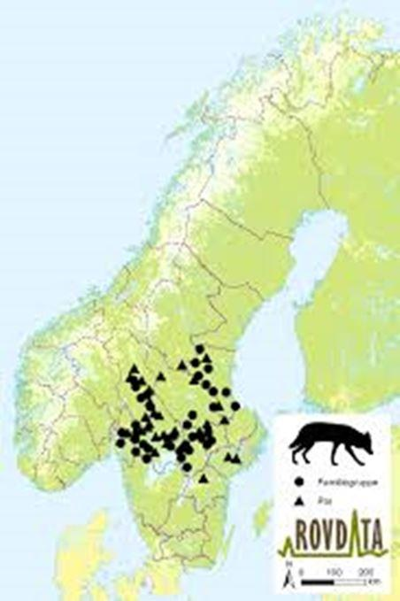
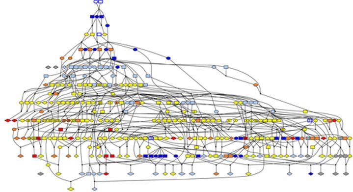

D’un espace à l’autre, quelle identité pour le loup ?
par Laurent MOURLAT
Cet article examine les changements de l’identité du loup induits par l’organisation moderne des territoires en Norvège. Les éléments centraux de la réflexion développée au cours des lignes qui suivent sont la ruralité, la naturalité ainsi que l’imaginaire lié à canis lupus. Le choix du pays n’est pas anodin car la Norvège a au cours de son histoire developpé une riche mythologie en rapport à l’animal. Enfin, c’est en discutant le sens de l’idée d’autonomie que l’auteur s’est employé à montrer que la perte progressive de l’imaginaire lié à Canis lupus pourrait rendre difficile la compréhention de mots ou de concepts qui y sont attachés.
Canis lupus en Norvège, une histoire transgressive
Honni par les uns, défendu par les autres le loup est de nos jours un support identitaire. Le caractère non négociable de la dualité qu’il incarne révèle les fractures d’un modèle de société où s’affrontent deux visions de la nature, la ruralité et la naturalité. En Norvège, pays où la chasse au loup est autorisée de façon sporadique, la ligne de fracture idéologique entre les détracteurs et les défenseurs de canis lupus semble aussi impliquer l’imaginaire du “sauvage” et du “domestique”. Dans cet article nous examinerons quelles peuvent être les conséquences de ces représentations du loup en tant qu'espèce ou comme entité symbolique individuelle.
Le loup fut de tout temps un habitant naturel des forêts norvégiennes. Prédateur redouté et chasseur hors pair l’animal est pratiquement éradiqué du sud de la Norvège autour de 1860. Entre 1920 et 1940 la population est minimale et en voie de disparition. Au cours des décennies qui suivent l’après-guerre ni la politique cynégétique ni les mentalités ne semblent évoluer de façon significative. C’est en 1971, après avoir frôlé l’extinction totale que le loup est finalement protégé. En 2016 le gouvernement norvégien prend la décision controversée d’autoriser la chasse au loup.
La nouvelle polarise le débat et suscite l’ire des milieux écologistes ainsi que la colère d’une majeure partie des populations citadines. De l’autre côté de l’échiquier politique, les éleveurs ainsi qu’une partie des populations locales semblent satisfaits.
Cette dichotomie semble démontrer que la figure du loup met en œuvre un processus mental transgressif. En passant d’un espace à un autre l’animal joint des catégories considérées comme mutuellement exclusives.
Une organisation sectorielle des territoires
Animal problématique s’il en est, le loup est au centre de querelles incessantes. Responsable de dégâts dans les troupeaux et de ce fait exécré par les éleveurs Canis lupus est l’illustration de deux propositions antinomiques. Protégé par la loi dans son statut de prédateur et menacé d’extinction l’animal présente un caractère non négociable. Fort de cet examen les gouvernements successifs prennent au fil des ans des décisions présentées comme consensuelles. L’idée d’organiser l’espace en secteurs dédiés voit le jour, l’intention est de pérenniser l’élevage et d’assurer la survie du loup. À partir de 2004 l’espèce se voit donc allouée un territoire réservé.
La zone dédiée totalise alors 5,5 % du royaume. Le 6 juin 2016, le gouvernement décide d’amoindrir ladite zone de 8 % et autorise du même coup le prélevement de 47 individus dont 24 à l’intérieur du territoire réservé. Le 1er octobre 2018, après que les autorités aient donné leur accord à l’éradication de 26 loups supplémentaires pour cause de dégâts sur les troupeaux, le consensus semble être brisé. Ainsi, le loup se joue une fois de plus des catégories. À la hiérarchisation des territoires instituée par la civilisation et l’économie il répond par la transgression et fait sien le domaine des hommes. Il est encore et toujours le révélateur de la porosité des espaces institutionnalisés par la culture.
Souvent présenté comme un animal invasif voire nuisible, le loup n’en est pas moins l’héritier d’une histoire et d’une mythologie. Des contes de Grimm au «Beserkir»1 nordique il peuple l’imaginaire des hommes depuis des millénaires. Intégré à une mémoire collective et vivante le loup est aujourd’hui toujours un animal à part. En effet, dans une enquête incluant des groupes aux intérêts distincts2 Canis lupus est décrit en ces termes : « Intelligent, malin, social, stratégique, spontané, dominant, beau, sauvage, propre, original ». Dans la même étude, les personnes interrogées qualifient une rencontre avec cet animal d’extraordinaire car ce dernier est selon eux l’incarnation même du « sauvage ». Il n’est alors pas surprenant de constater que l’incursion du loup autour des zones habitées est « exotique » et que ce pas vers la sphère domestique soit contraire à ce qu’incarne sa symbolique.
Du sauvage au domestique, une symbolique redéfinie par les territoires
Animal singulier s’il en est, le loup se situe à la marge. Il est simultanément vu comme une menace pour l’activité économique des territoires de la ruralité et un représentant incontournable de l’ordre naturel et de la biodiversité. De cette constatation nous pouvons tirer deux discours distincts. Le premier se fait l’avocat de la naturalité et d’une narration biologique qui met en avant la richesse de la nature en soi ainsi que l’apologie de la vie sauvage. Dans cet espace sémantique l’absence de l’homme est consubstantielle de la forme la plus aboutie de la nature. Le second défend l’idée d’une nature domestiquée et façonnée par l’activité humaine. Dans cette acception, l’homme aménage la biodiversité et l’adapte à l’activité économique. De ces deux systèmes radicalement distincts il ressort que l’élément central de différenciation soit le concept d’autonomie. Une nature autonome dont la régulation interne inclut la présence du loup s’oppose donc à l’idée d’un territoire organisé par la culture.
La dichotomie décrite dans les lignes qui précèdent n’est pas circonscrite à des conceptions antinomiques. Elle est bien plus profonde et invite au questionnement. En effet, la représentation symbolique du loup dans l’imaginaire en tant qu’incarnation du « sauvage » serait-elle altérée par la redéfinition de son univers ? En d’autres termes, l’idée d’un loup intégré dans un ensemble administré par l’homme ne serait-elle pas sujette à une mutation sémantique profonde ? Aussi, qu’en est-il de la situation symbolique du loup en tant qu’espèce ?
La question est vaste et complexe et, il me semble que, pouvoir tenir un discours rationnel sur la question présuppose une prise en compte des possibles glissements sémantiques et symboliques induits par les changements de statut des territoires. En effet, si l’on considère que le concept d’autonomie est constitutif de la figure du loup dans l’imaginaire des hommes il semble opportun de l’intégrer dans une discussion qui s’articule autour de notions telles que la naturalité et la ruralité. Cependant, même si une discussion semble ici être des plus salutaire, il s’agit de ne pas se fourvoyer. Le loup en Norvège est un animal dont la symbolique est profonde. Il est celui qui participe à la fin du monde prophétique de Ragnarokk3. En d’autres termes, il fait partie intégrante de la culture.
De la nature à la culture, quels changements sémantiques ?
L’organisation des sociétés humaines est sous-tendue par un ordonnancement symbolique dont la mise en œuvre est assurée par des règles communes4. De cette organisation il découle que les phénomènes correspondants à des catégories symboliques dans une culture donnée sont aisément intégrés dans un système signifiant. Au vu de cette constatation, il me semble que le changement possible de statut symbolique du loup en Norvège peut s’apparenter à un changement de référent culturel.
Ainsi, du loup dévorateur d’astres de la mythologie scandinave, le statut du loup est de nos jours étroitement lié au statut des territoires dans lesquels il évolue. Le loup n’est donc plus maître de sa symbolique, il fait de nos jours partie intégrante d’un système organisé qui lui assigne des espaces dédiés.
Anciennement porteur de mystère et d’une complexité ambiguë il semble bien que l’animal ne soit plus que ce qu’il est et que de ce fait sa symbolique ait subit une incommensurable perte de sens. Aussi, et cela pour revenir à la question de la symbolique du loup en tant qu’espèce, il semble bien que nous soyons en proie à un problème de définition plus épineux. En effet, et c’est bien là la question à laquelle il faudrait pouvoir répondre avant de se lancer dans une analyse, dans quelle catégorie symbolique ou zoologique intégrer un loup sujet à l’hybridation5 ou à l’endogamie6? Nous ne touchons pas ici simplement aux catégories symboliques mais au processus dynamique qui sous-tend à la formation des espèces.
Figure illustrant le degré d’endogamie d’une population de loups scandinaves 7

La figure ci-dessus représente le degré d’endogamie d’une population lupine dont l’étude débute en 1983 et se termine en 2012. Les élipses représentent les femelles, les rectangles les males et les formes en diamants les portées dont aucun des petits n’est en age de se reproduire. Les couleurs représentent le coefficient d’engogamie f des individus adultes et des portées. Bleu foncé : 0 ≤ f < 0.1, bleu clair : 0.1 ≤ f < 0.2, jaune : 0.2 ≤ f < 0.3, orange : 0.3 ≤ f < 0.4, rouge : 0.4 ≤ f < 0.5, gris : f inconnu.
La problématique autour de cet animal bien singulier mais au combien révélateur du questionnement induit par l’urbanisation actuelle ne se limite pas à des considérations politiques ou partisanes. De l’hybridation à l’endogamie en passant par la perte symbolique induite par l’organisation des territoires le loup n’est que le révélateur d’une évolution. Aussi, la perte même partielle de la sémantique liée à une entité symbolique aussi riche qu’ancienne et dotée d’un potentiel onirique puissant aurait à mon sens des répercussions. En effet, il est fort probable que faute d’un appareil symbolique approprié l’altération d’un pareil héritage nuise à la compréhension profonde de mots dans un contexte, de concepts ou de leurs nuances. Il serait alors possible d’envisager que des parties spécifiques de la culture du pays soient rendues difficiles d’accès aux générations à venir.
L.M.
NOTES ET RÉFÉRENCES
1. La figure du symbolique du «Beserkir» nordique représente la fureur guerrière de l’homme métamorphosé en loup. Pour la vision structuraliste, l’utilisation de la symbolique du grand prédateur est dans la nature ce que le guerrier est à l’ordre social. DALLA B. (2002). Pourquoi danser avec les loups? In: Le Monde alpin et rhodanien. Revue régionale d'ethnologie, n°1-3/2002)
2. FIGARI, H. & SKOGEN, K. (2008) NINA Rapport 391: 64 pp. Norsk institutt for naturforskning (NINA), Trondheim.
3. « Ragnarokk » renvoie à la fin du monde dans la mythologie nordique.
4. JUIGNET, P (2015). Ordre symbolique et Loi commune. In : Philosophie, science et société.
5. Avec l’extension des zones habitées il semble inévitable qu’advienne l’accouplement spontané entre des chiens domestiques et des louves. Déjà en 2010 une portée d’hybrides (au nombre de quatre) a dû être mise hors d’état de nuire. Un chiot hybride s’est échappé dans la nature.
6. L’endogamie du loup en Norvège est un problème majeur. La population actuelle présente une variation génétique minimale car sa génération repose sur trois loups venus s’établir dans les années 80 et 90, en plus de quelques autres dont la venue date de 2006, 2007 et 2013. ELLEGREN, H. (2017) “Genomic consequences of intensive inbreeding in an isolated wolf population”, Nature Ecology & Evolution, 124-131.
7. FLAGSTAD, BENSCH, WABAKKEN. (2016) «Genetic rescue in a severely inbred wolf population » , Molecular Ecology, John Wiley and Sons, p.27.
BIBLIOGRAPHIE SOMMAIRE
DALLA B. (2002). Pourquoi danser avec les loups? In: Le Monde alpin et rhodanien. Revue régionale d'ethnologie, n°1-3/2002)
JUIGNET, P (2015). Ordre symbolique et Loi commune. In : Philosophie, science et société. (revue en ligne)
ELLEGREN, H. (2017) “Genomic consequences of intensive inbreeding in an isolated wolf population”, Nature Ecology & Evolution, p.124-131.
FLAGSTAD, BENSCH, WABAKKEN. (2016) «Genetic rescue in a severely inbred wolf population » , Molecular Ecology, John Wiley and Sons, p.27
FIGARI, H. & SKOGEN, K. (2008) NINA Rapport 391: 64 pp. Norsk institutt for naturforskning (NINA), Trondheim.

Partager cette page